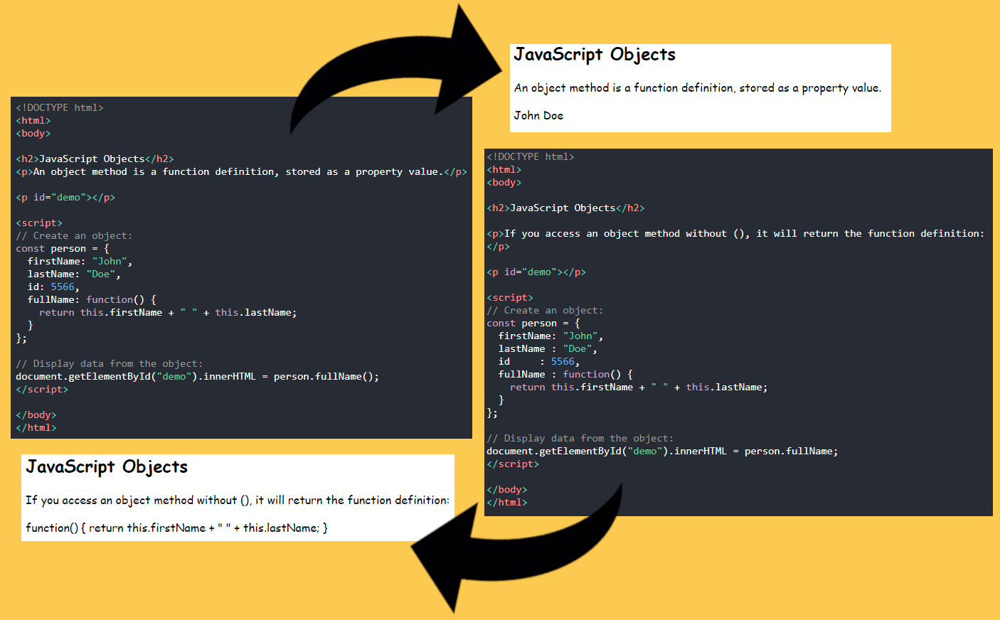

JavaScript w skrócie JS – skryptowy język programowania, stworzony przez firmę Netscape, najczęściej stosowany na stronach internetowych. Twórcą JavaScriptu jest Brendan Eich. W połowie lat 90. XX wieku organizacja ECMA wydała na podstawie JavaScriptu standard języka skryptowego o nazwie ECMAScript, aktualnie rozwijaniem tego standardu zajmuje się komisja TC39

JavaScript może zmienić zawartość HTML
Jedną z wielu metod JavaScript HTML jest getElementById();
Poniższy przykład "znajduje" element HTML (z id="demo") i zmienia zawartość elementu (innerHTML) na "Hello JavaScript"
‹ button type="button" onclick="document.getElementById('demo').style.display='block'"› Click Me!
‹ /button ›
result:
JavaScript umie
też liczyć :D
5 + 6 =
‹ p › 5 + 6 = ‹ /p › ‹ p id="demo1" › ‹ /p ›
‹ script ›
document.getElementById("demo1").innerHTML = 5 + 6;
‹/script ›
document.getElementById('myImage').src='zdj/worm2.png'
Da się również dawać zmiany stylu:
document.getElementById('demo').style.fontSize='35px'
Funkcje i zdarzenia
JavaScript function to blok kodu JavaScript, który może zostać wykonany, gdy zostanie "wywołany".

Możliwości wyświetlania JavaScript
JavaScript może „wyświetlać” dane na różne sposoby:
- Zapis do elementu HTML za pomocą innerHTML
- Pisanie do wyjścia HTML za pomocą document.write()
- Pisanie w polu alertu za pomocą window.alert()
- Pisanie do konsoli przeglądarki za pomocą console.log()
Korzystanie z window.alert()
np: window.alert("tu wpisujesz co chcesz aby się wyświetliło w okienku")

Składnia
EXAMPLE
let x, y, z; // Statement 1
x = 5; // Statement 2
y = 6; // Statement 3
z = x + y; // Statement 4
Składnia JS:
Wartości, operatory, wyrażenia, słowa kluczowe i komentarze
Po wykonaniu każdej instrukcji należy postawić średnik
Słowa kluczowe JavaScript

Słowa kluczowe JavaScript są słowami zastrzeżonymi.
Słowa zastrzeżone nie mogą być używane jako nazwy zmiennych.

Wartości JavaScript
Składnia JavaScript definiuje dwa typy wartości:
- Wartości stałe
- Wartości zmienne
Stałe wartości są nazywane literałami.
Wartości zmiennych nazywane są Zmiennymi.
Literały JavaScript
1. Liczby są zapisywane z lub bez miejsc dziesiętnych:
2. Ciągi to tekst, pisany w cudzysłowie podwójnym lub pojedynczym:
Zmienne JavaScript
W języku programowania zmienne służą do przechowywania wartości danych.
JavaScript używa słów kluczowych var, let a const do Declare zmiennych.
Znak równości służy do przypisywania wartości do zmiennych.
W tym przykładzie x jest zdefiniowane jako zmienna. Wtedy x jest przypisywana (podana) wartość 6:
x = 6;
Wyrażenia JavaScript
Wyrażenie jest kombinacją wartości, zmiennych i operatorów, które obliczają wartość.
Obliczenie nazywa się oceną.
Na przykład: 5 * 10 daje 50,
x * 10
„Jan” + „ ” + „Kowalski” „Jan Kowalski”
Słowa kluczowe JavaScript
Słowa kluczowe JavaScript służą do identyfikacji działań, które należy wykonać.
let / var Kluczowe informuje przeglądarkę, aby utworzyć zmienne:
x = 5 + 6;
y = x * 10;
Zmienne
Istnieją 3 sposoby zadeklarowania zmiennej JavaScript:
VAR
var x = 5;
var y = 6;
var z = x + y;
var price1 = 5;
var price2 = 6;
var total = price1 + price2;
Ogólne zasady konstruowania nazw zmiennych (unikalnych identyfikatorów) to:
- Nazwy mogą zawierać litery, cyfry, podkreślenia i znaki dolara.
- Imiona muszą zaczynać się na literę
- Nazwy mogą również zaczynać się od $ i _ (ale nie będziemy ich używać w tym samouczku)
- W nazwach rozróżniana jest wielkość liter (y i Y to różne zmienne)
- Zastrzeżone słowa (takie jak słowa kluczowe JavaScript) nie mogą być używane jako nazwy
W identyfikatorach JavaScript rozróżniana jest wielkość liter.
= jest operatorem „przypisania”
== jest operatorem „równa się”
W poniższym przykładzie tworzymy zmienną o nazwie carName i przypisujemy jej wartość „Volvo”.
Następnie "wypisujemy" wartość wewnątrz akapitu HTML z id="demo":

LET
- let Hasło zostało wprowadzone w ES6 (2015).
- Zmienne zdefiniowane za let pomocą nie mogą być ponownie zadeklarowane.
- Zmienne zdefiniowane za pomocą let muszą zostać zadeklarowane przed użyciem.
- Zmienne zdefiniowane za pomocą let mają zasięg bloku.
let - zasięg blokowy

var - zasięg funkcyjny

CONST
- const Hasło zostało wprowadzone w ES6 (2015).
- Zmienne zdefiniowane za const pomocą nie mogą być ponownie zadeklarowane.
- Zmienne zdefiniowane za const pomocą nie mogą być ponownie przypisane.
- Zmienne zdefiniowane za pomocą const mają zasięg bloku.
Kiedy używać stałej JavaScript?
Zgodnie z ogólną zasadą, zawsze deklaruj zmienne z, const chyba że wiesz, że wartość ulegnie zmianie.
Zawsze używaj, constgdy deklarujesz:
- Nowa tablica
- Nowy obiekt
- Nowa funkcja
- Nowy RegExp
Obiekty stałe i tablice
Słowo kluczowe constjest trochę mylące. Nie definiuje stałej wartości. Definiuje stałe odniesienie do wartości.
Z tego powodu NIE możesz:
- Przypisz ponownie stałą wartość
- Ponownie przypisz stałą tablicę
- Przypisz ponownie stały obiekt
Ale możesz:
- Zmień stałą tablicę
- Zmień stały obiekt
Tablice stałe
Możesz zmienić elementy tablicy stałej:

Ale NIE możesz zmienić przypisania tablicy:

Obiekty stałe
Możesz zmienić właściwości obiektu stałego:

Ale NIE możesz zmienić przypisania obiektu:

Operatory
| Operator | Wytłumaczenie |
|---|---|
| + | dodawanie |
| - | odejmowanie |
| * | mnożenie |
| / | dzielenie |
| ** | Potęgowanie |
| % | moduł (pozostały z dywizji) |
| ++ | przyrost |
| -- | zmniejszenie |
Operatory przypisania JavaScript
Operatory przypisania przypisują wartości do zmiennych JavaScript.
| Operator | Przykład | wytłumaczenie (same as) |
|---|---|---|
| = | x=y | x=y |
| += | x+=y | x = x + y |
| -= | x -= y | x = x - y |
| *= | x *= y | x = x * y |
| /= | x /= y | x = x / y |
| %= | x %= y | x = x % y |
| **= | x **= y | x = x ** y |
Zadanie dodanie uruchamiający (+=) zwiększa wartość zmiennej.
let x = 5 + 5; // 10
let y = "5" + 5; // 55
let z = "Hello" + 5; //Hello5
Operatory porównania JavaScript
| Operator | Wytłumaczenie |
|---|---|
| == | równy |
| === | jednakowa wartość i taki sam typ |
| != | różny od |
| !== | różna wartość lub różny typ |
| ‹ | większy niż |
| › | mniejszy niż |
| ‹ = | większy lub równy |
| › = | mniejszy lub równy |
| ? | operator trójskładnikowy |
| && | logical and |
| || | logical or |
| ! | logical not |

Arytmetyka


Typy danych JavaScript

Pojęcie typów danych
W programowaniu ważną koncepcją są typy danych.
Aby móc operować na zmiennych, ważne jest, aby wiedzieć coś o typie.
Bez typów danych komputer nie może bezpiecznie rozwiązać tego problemu:
let x = 16 + "Volvo";
Czy dodanie „Volvo” do szesnastu ma sens? Czy spowoduje to błąd, czy też wynik?
JavaScript potraktuje powyższy przykład jako:
let x = "16" + "Volvo";
let x = 16 + 4 + "Volvo"; //20Volvo
let x = "Volvo" + 16 + 4; //Volvo164
Typy JavaScript są dynamiczne
JavaScript ma typy dynamiczne. Oznacza to, że ta sama zmienna może być używana do przechowywania różnych typów danych:

- Ciągi let carName = "Volvo XC60";
- Liczby let x = 34;
- Wartości logiczne (6 == 6) - true || (6 == 5) - flase
- Tablice const cars = ["Saab", "Volvo", "BMW"];
- Obiekty const person = {firstName:"John", lastName:"Doe", age:50, eyeColor:"blue"};
- Rodzaje operatora typeof "John Doe" || typeof 3.14
- Nieokreślony car = undefined;
- Puste wartości let car = "";
Funkcje JavaScript
Obiekty
Funkcja JavaScript to blok kodu przeznaczony do wykonania określonego zadania.
Funkcja JavaScript jest wykonywana, gdy "coś" ją wywołuje (wywołuje to).

Zmienne lokalne
Zmienne zadeklarowane w funkcji JavaScript stają się LOKALNE dla funkcji.
Dostęp do zmiennych lokalnych można uzyskać tylko z poziomu funkcji.
// code here can NOT use carName
function myFunction() {
let carName = "Volvo";
// code here CAN use carName
}
// code here can NOT use carName
Zmienne lokalne są tworzone podczas uruchamiania funkcji i usuwane po zakończeniu funkcji.
Obiekty JavaScript
Przedmioty, właściwości i metody z prawdziwego życia
W rzeczywistości samochód to przedmiot.
Samochód ma właściwości takie jak waga i kolor oraz metody takie jak start i stop:

Wszystkie samochody mają te same właściwości , ale wartości właściwości różnią się w zależności od samochodu.
Wszystkie samochody mają te same metody , ale metody są wykonywane w różnym czasie.
Obiekty JavaScript
Wiesz już, że zmienne JavaScript to kontenery na wartości danych.
Ten kod przypisuje prostą wartość (Fiat) do zmiennej o nazwie samochód:
let car = "Fiat";
Obiekty też są zmiennymi. Ale obiekty mogą zawierać wiele wartości.
Ten kod przypisuje wiele wartości (Fiat, 500, biały) do zmiennej o nazwie samochód:
const car = {type:"Fiat", model:"500", color:"white"};
Wartości są zapisywane jako pary nazwa:wartość (nazwa i wartość oddzielone dwukropkiem).
Powszechną praktyką jest deklarowanie obiektów za pomocą const słowa kluczowego.
Dostęp do właściwości obiektu
Dostęp do właściwości obiektu można uzyskać na dwa sposoby:
objectName.propertyName
lub
objectName["propertyName"]
Przykład:

This słowo kluczowe
W definicji funkcji this odnosi się do „właściciela” funkcji.
W powyższym przykładzie this jest to obiekt person, który jest „właścicielem” fullName funkcji.
Innymi słowy this.firstName oznacza firstName własność tego obiektu.
Dostęp do metod obiektowych
Dostęp do metody obiektu uzyskuje się za pomocą następującej składni:
objectName.methodName()Przykład:
name = person.fullName();
Jeśli uzyskasz dostęp do metody bez nawiasów (), zwróci ona definicję funkcji.
Nie deklaruj ciągów, liczb i wartości logicznych jako obiektów!
Kiedy zmienna JavaScript jest zadeklarowana ze słowem kluczowym „new”, zmienna jest tworzona jako obiekt:
x = new String(); // Declares x as a String object
y = new Number(); // Declares y as a Number object
z = new Boolean(); // Declares z as a Boolean object
Unikaj obiektów String, Number, i Boolean. Komplikują one Twój kod i spowalniają szybkość wykonywania.
Zdarzenia
Typowe zdarzenia HTML
Oto lista niektórych typowych zdarzeń HTML:
| Zdarzenia | Opis |
|---|---|
| onchange | Zmieniono element HTML |
| onclick | Użytkownik klika element HTML |
| onmouseover | żytkownik przesuwa kursor myszy nad elementem HTML |
| onmouseout | Użytkownik odsuwa mysz od elementu HTML |
| onkeydown | Użytkownik naciska klawisz klawiatury |
| onload | Przeglądarka zakończyła ładowanie strony |
Ciągi - Strings
String Methods
Ciąg JavaScript to zero lub więcej znaków zapisanych w cudzysłowie.
Przykład
let text = "JavaScribak";
String Length
Aby znaleźć długość ciągu, użyj wbudowanej length właściwości:
let text = "ABCDEFGHIJKLMNOPQRSTUVWXYZ";
text.length; // Will return 26
Aby nie stało się tak:
let text = "We are the so-called "Vikings" from the north.";
Używamy znaków: \'text\' = 'text', \"text\" = "text" lub \\text\\ = \text\:
let text = "We are the so-called \"Vikings\" from the north.";
let text= 'It\'s alright.';
let text = "The character \\ is called backslash.";
Ciągi mogą być obiektami,
ALE ICH NIE DEKLARUJ JAKO OBIEKTY
Normalnie, łańcuchy JavaScript są pierwotnymi wartościami, tworzonymi z literałów:
let firstName = "John";
Ale łańcuchy można również zdefiniować jako obiekty za pomocą słowa kluczowego new:
let firstName = new String("John");
Przykład
let x = "John";
let y = new String("John");
// typeof x will return string
// typeof y will return object
String Methods
Pamiętaj: JavaScript liczy pozycje od zera. Pierwsza pozycja to 0.
Wszystkie metody ciągów zwracają nowy ciąg. Nie modyfikują oryginalnego ciągu.
| Metoda | Opis | Przykład |
|---|---|---|
| length | Długość łańcucha | txt.length |
| slice(start, end) | wyświetla pozycje początkową i końcową (bez końca) (akceptuje liczby ujemne) | let str = "Apple, Banana, Kiwi" str.slice(7, 13) // Banana str.slice(7); // Banana, Kiwi str.slice(-12, -6) // Banana |
| substring(start, end) | podobna do slice(),lecz NIE akceptuje liczb ujemnych | str.substring(7,13) //Banana |
| substr(start, length) | drugi parametr określa długość wyodrębnionej części | str.substr(7, 6) //Banana str.substr(7) //Banana, Kiwi str.substr(-4) //Kiwi |
| replace() | zastępuje określoną wartość z inną wartość w ciąg znaków | let x = "Hello JR!"; let newx = x.replace("JR", "JS"); zamienia JR na JS: "Hello JS!" |
| toUpperCase() | Zamienia małe litery na duże | let text2 = text1.toUpperCase(); |
| toLowerCase() | Zamienia duże litery na małe | let text2 = text1.toLowerCase(); |
| concat() | Łączy dwa lub więcej ciągów | let text1 = "Hello "; let text2 = "World!"; let text3 = text1.concat(text2); |
| trim() | usuwa białe znaki po obu stronach ciąg znaków | let text = " Hello World! "; text.trim() //"Hello World!" |
| padStart | Dopełnienie na początku ciągu | let text = "5"; text.padStart(4,0) //0005 |
| padEnd | Dopełnienie na koncu ciągu | let text = "5"; text.padEnd(4,0) //5000 |
| charAt(position) | zwraca znak pod określonym indeksem | let text = "HELLO WORLD"; text.charAt(0) // H |
| charCodeAt(position) | zwraca Unicode znaku w określonym indeksem w ciąg znaków kodu UTF-16 (liczba całkowita od 0 do 65535) | let text = "HELLO WORLD"; text.charCodeAt(0) // 72 |
| [] | dostęp do właściwości [ ] w ciągach | let text = "HELLO WORLD"; text[0] //H |
| WYSZUKIWANIE CIĄGÓW JS | ||
| indexOf(" ") | Zwraca pozycję pierwszego znalezionego wystąpienia określonego indexu | let txt = "abcdabcd"; let pos = txt.indexOf("d") //3; |
| lastIndexOf() | Zwraca pozycję ostatniego znalezionego wystąpienia określonego indexu nie może brać silne wartości wyszukiwania (wyrażenia regularne) | let txt = "abcdabcd"; let pos = txt.indexOf("d") //8; |
| search() | wyszukuje ciąg dla określonej wartości i zwraca pozycję, ale nie może zająć drugą pozycję startową argument | let str = "JS czy JR"; str.search("czy") //3 |
| startsWith() | str.startsWith (searchvalue, start) | let tx = "Hello world, welcome to the universe."; tx.startsWith("Hello") //true tx.startsWith("world", 6) //true tx.startsWith("world") //flase |
| endsWith() | string.endswith (searchvalue, length) | var text = "John Doe"; text.endsWith("Doe")//true text.endsWith("world", 11)//true |
| › LINK PO WIĘCEJ ‹ | ||
Liczby
JavaScript ma tylko jeden typ liczby. Liczby mogą być zapisywane z lub bez miejsc dziesiętnych.
let x = 3.14;
let y = 3;
Liczby bardzo duże lub bardzo małe można zapisać w notacji naukowej (wykładniczej)
let x = 123e5; // 12300000
let y = 123e-5; // 0.00123
Precyzja - Liczby całkowite (liczby bez kropki lub notacji wykładniczej) mają dokładność do 15 cyfr.
Maksymalna liczba miejsc po przecinku to 17, ale arytmetyka zmiennoprzecinkowa NIE zawsze jest dokładna w 100%:
let x = 0.2 + 0.1; // x will be 0.30000000000000004
Aby rozwiązać powyższy problem, warto mnożyć i dzielić:
let x = (0.2 * 10 + 0.1 * 10) / 10; // x will be 0.3
Dodawanie liczb i ciągów
OSTRZEŻENIE!!
JavaScript używa operatora + zarówno do dodawania, jak i łączenia.
Numery są dodawane. Ciągi są łączone.
Dodawanie dwóch liczb:
let x = 10;
let y = 20;
let z = x + y; // z will be 30 (a number)
Jeśli dodasz dwa ciągi, wynikiem będzie konkatenacja ciągów:
let x = "10";
let y = "20";
let z = x + y; // z will be 1020 (a string)
Jeśli dodasz liczbę i ciąg, wynikiem będzie konkatenacja ciągu:
let x = 10;
let y = "20";
let z = x + y; // z will be 1020 (a string)
Jeśli dodasz ciąg i liczbę, wynikiem będzie konkatenacja ciągu:
let x = "10";
let y = 20;
let z = x + y; // z will be 1020 (a string)
Częstym błędem jest oczekiwanie, że wynik ten wyniesie 30:
let x = 10;
let y = 20;
let z = "The result is: " + x + y; //The result is: 1020
Częstym błędem jest oczekiwanie, że ten wynik będzie 102030:
let x = 10;
let y = 20;
let z = "30";
let result = x + y + z; //3030
Interpreter JavaScript działa od lewej do prawej.
Pierwsze 10 + 20 jest dodawane, ponieważ x i y są liczbami.
Następnie łączy się 30 + „30”, ponieważ z jest łańcuchem.
Ciągi numeryczne
Ciągi JavaScript mogą mieć zawartość liczbową:
let x = 100; // x is a number
let y = "100"; // y is a string
JavaScript spróbuje przekonwertować ciągi na liczby we wszystkich operacjach numerycznych:
To zadziała:
let x = "100";
let y = "10";
let z = x / y; // z will be 10
let z = x * y; // z will be 1000
let z = x - y; // z will be 90
let z = x + y; // z will not be 110 (It will be 10010)
NaN - To nie jest liczba
NaN jest słowem zastrzeżonym JavaScript wskazującym, że liczba nie jest liczbą legalną.
Próba wykonania arytmetyki z ciągiem nienumerycznym da wynik NaN (Not a Number):
let x = 100 / "Apple"; // x will be NaN (Not a Number)
let x = 100 / "10"; // x will be 10
Możesz użyć globalnej funkcji JavaScript, isNaN() aby dowiedzieć się, czy wartość jest liczbą
let x = 100 / "Apple";
isNaN(x); // returns true because x is Not a Number
Uważaj na NaN. Jeśli użyjesz NaN w operacji matematycznej, wynikiem będzie również NaN:
let x = NaN;
let y = 5;
let z = x + y; // z will be NaN
let x = NaN;
let y = "5";
let z = x + y; // z will be NaN5
NaN to liczba: typeof NaN zwraca number:
typeof NaN; // returns "number"
Nieskończoność
Infinity(lub -Infinity) to wartość zwrócona przez JavaScript, jeśli obliczysz liczbę poza największą możliwą liczbą.
Przykład:

Dzielenie przez 0 (zero) generuje również Infinity:

Infinity to liczba: typeof Infinity zwraca number.

Szesnastkowy
JavaScript interpretuje stałe numeryczne jako szesnastkowe, jeśli są poprzedzone 0x.

Nigdy nie pisz liczby z wiodącym zerem (np. 07).
Niektóre wersje JavaScriptu interpretują liczby jako ósemkowe, jeśli są napisane z wiodącym zerem.
Domyślnie JavaScript wyświetla liczby jako 10 miejsc po przecinku.
Ale możesz użyć tej toString() metody, aby wyprowadzić liczby od podstawy 2 do podstawy 36.
Szesnastkowy ma podstawę 16. Dziesiętny to podstawa 10. Liczba ósemkowa to podstawa 8. Binarny to baza 2.

Liczby mogą być obiektami
Normalnie liczby JavaScript są prymitywnymi wartościami utworzonymi z literałów:
let x = 123;
Ale liczby można również zdefiniować jako obiekty za pomocą słowa kluczowego new:
let y = new Number(123);

Nie twórz obiektów Number. Spowalnia szybkość wykonywania.
Słowo new kluczowe komplikuje kod. Może to spowodować nieoczekiwane wyniki:
Używając == operatora, równe liczby są równe:

Podczas korzystania z === operatora równe liczby nie są równe, ponieważ === operator oczekuje równości zarówno pod względem typu, jak i wartości.

Albo jeszcze gorzej. Obiekty NIE mogą być porównywane:

Zwróć uwagę na różnicę między (x==y) a (x===y).
Porównanie dwóch obiektów JavaScript zawsze zwróci false.
| Metoda | Opis | Przykład |
|---|---|---|
| toString() | zwraca liczbę jako ciąg znaków | 
|
| toExponential() | zwraca łańcuch, z liczbą zaokrągloną i zapisaną w notacji wykładniczej. Parametr określa liczbę znaków po przecinku | 
|
| toFixed() | zwraca ciąg, z liczbą zapisaną z określoną liczbą miejsc po przecinku | 
|
| toPrecision() | zwraca ciąg, z liczbą zapisaną o określonej długości | 
|
| valueOf() | zwraca liczbę jako liczbę. | 
|
| Number() | może służyć do konwersji zmiennych JavaScript na liczby |  
|
| parseInt() | analizuje ciąg i zwraca liczbę całkowitą. Spacje są dozwolone. Zwracany jest tylko pierwszy numer | 
|
| parseFloat() | analizuje ciąg i zwraca liczbę. Spacje są dozwolone. Zwracany jest tylko pierwszy numer | 
|
| MAX_VALUE | zwraca największą możliwą liczbę w JavaScript. | 
|
| MIN_VALUE | zwraca najniższą możliwą liczbę w JavaScript | 
|
| › LINK PO WIĘCEJ ‹ | ||
Tablice
Tablice JavaScript służą do przechowywania wielu wartości w jednej zmiennej.

Co to jest tablica?
Tablica to specjalna zmienna, która może jednocześnie przechowywać więcej niż jedną wartość.
Jeśli masz listę elementów (na przykład listę nazw samochodów), przechowywanie samochodów w pojedynczych zmiennych może wyglądać tak:

Co jednak zrobić, jeśli chcesz zapętlić samochody i znaleźć konkretny? A co by było, gdybyś nie miał 3 samochodów, ale 300?
Rozwiązaniem jest tablica!
Tablica może zawierać wiele wartości pod jedną nazwą, a dostęp do wartości można uzyskać, odwołując się do numeru indeksu.
Tworzenie tablicy
Użycie literału tablicowego to najprostszy sposób na utworzenie tablicy JavaScript.
Składnia:

Przykład:

Spacje i łamanie wierszy nie są ważne. Deklaracja może obejmować wiele wierszy:

Możesz również utworzyć tablicę, a następnie podać elementy:

Using the JavaScript Keyword new
Poniższy przykład tworzy również tablicę i przypisuje do niej wartości:

Dwa powyższe przykłady robią dokładnie to samo.
Nie ma potrzeby używania new Array().
Dla uproszczenia, czytelności i szybkości wykonania użyj pierwszego (metody literału tablicowego).
Dostęp do elementów tablicy
Dostęp do elementu tablicy można uzyskać, odwołując się do numeru indeksu:

Zmiana elementu tablicy
To stwierdzenie zmienia wartość pierwszego elementu w cars:

Access the Full Array - Uzyskaj dostęp do pełnej tablicy

Tablice są obiektami
Tablice to specjalny typ obiektów. typeofOperator w JavaScripcie zwraca „obiekt” na tablicach.
Ale tablice JavaScript najlepiej opisać jako tablice.
Tablice używają liczb, aby uzyskać dostęp do swoich „elementów”. W tym przykładzie person[0]<> zwraca John:
Tablica:

Obiekty używają nazw, aby uzyskać dostęp do swoich „członków”. W tym przykładzie person.firstName zwraca John:

Elementy tablicy mogą być obiektami
Zmienne JavaScript mogą być obiektami. Tablice to specjalne rodzaje obiektów.
Z tego powodu w tej samej tablicy można mieć zmienne różnych typów.
Możesz mieć obiekty w tablicy. Możesz mieć funkcje w tablicy. Możesz mieć tablice w tablicy:

Właściwości i metody tablicy
Prawdziwą siłą tablic JavaScript są wbudowane właściwości i metody tablic: